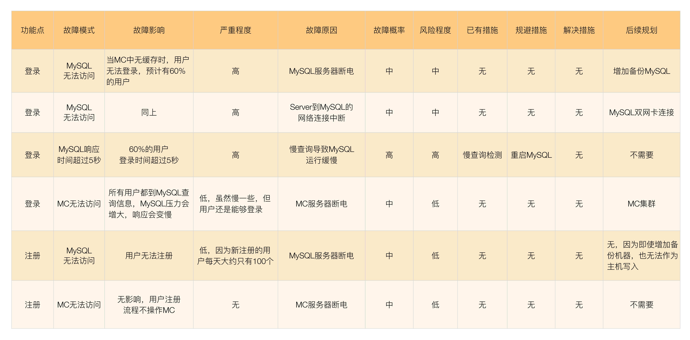
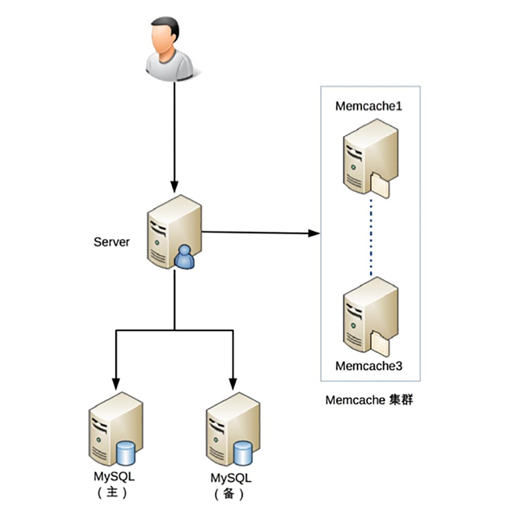

- 00 开篇词 照着做，你也能成为架构师！.md.html
- 01 架构到底是指什么？.md.html
- 02 架构设计的历史背景.md.html
- 03 架构设计的目的.md.html
- 04 复杂度来源：高性能.md.html
- 05 复杂度来源：高可用.md.html
- 06 复杂度来源：可扩展性.md.html
- 07 复杂度来源：低成本、安全、规模.md.html
- 08 架构设计三原则.md.html
- 09 架构设计原则案例.md.html
- 10 架构设计流程：识别复杂度.md.html
- 11 架构设计流程：设计备选方案.md.html
- 12 架构设计流程：评估和选择备选方案.md.html
- 13 架构设计流程：详细方案设计.md.html
- 14 高性能数据库集群：读写分离.md.html
- 15 高性能数据库集群：分库分表.md.html
- 16 高性能NoSQL.md.html
- 17 高性能缓存架构.md.html
- 18 单服务器高性能模式：PPC与TPC.md.html
- 19 单服务器高性能模式：Reactor与Proactor.md.html
- 20 高性能负载均衡：分类及架构.md.html
- 21 高性能负载均衡：算法.md.html
- 22 想成为架构师，你必须知道CAP理论.md.html
- 23 想成为架构师，你必须掌握的CAP细节.md.html
- 24 FMEA方法，排除架构可用性隐患的利器.md.html
- 25 高可用存储架构：双机架构.md.html
- 26 高可用存储架构：集群和分区.md.html
- 27 如何设计计算高可用架构？.md.html
- 28 业务高可用的保障：异地多活架构.md.html
- 29 异地多活设计4大技巧.md.html
- 30 异地多活设计4步走.md.html
- 31 如何应对接口级的故障？.md.html
- 32 可扩展架构的基本思想和模式.md.html
- 33 传统的可扩展架构模式：分层架构和SOA.md.html
- 34 深入理解微服务架构：银弹 or 焦油坑？.md.html
- 35 微服务架构最佳实践 - 方法篇.md.html
- 36 微服务架构最佳实践 - 基础设施篇.md.html
- 37 微内核架构详解.md.html
- 38 架构师应该如何判断技术演进的方向？.md.html
- 39 互联网技术演进的模式.md.html
- 40 互联网架构模板：存储层技术.md.html
- 41 互联网架构模板：开发层和服务层技术.md.html
- 42 互联网架构模板：网络层技术.md.html
- 43 互联网架构模板：用户层和业务层技术.md.html
- 44 互联网架构模板：平台技术.md.html
- 45 架构重构内功心法第一式：有的放矢.md.html
- 46 架构重构内功心法第二式：合纵连横.md.html
- 47 架构重构内功心法第三式：运筹帷幄.md.html
- 48 再谈开源项目：如何选择、使用以及二次开发？.md.html
- 49 谈谈App架构的演进.md.html
- 50 架构实战：架构设计文档模板.md.html
- 51 如何画出优秀的软件系统架构图？.md.html
- 加餐｜业务架构实战营开营了.md.html
- 加餐｜单服务器高性能模式性能对比.md.html
- 加餐｜扒一扒中台皇帝的外衣.md.html
- 如何高效地学习开源项目 华仔，放学别走！ 第3期.md.html
- 新书首发 《从零开始学架构》.md.html
- 架构专栏特别放送 华仔，放学别走！ 第2期.md.html
- 架构专栏特别放送 华仔，放学别走！第1期.md.html
- 架构师必读书单 华仔，放学别走！ 第5期.md.html
- 架构师成长之路 华仔，放学别走！ 第4期.md.html
- 结束语 坚持，成就你的技术梦想.md.html
- 捐赠
24 FMEA方法，排除架构可用性隐患的利器
我在前面的专栏分析高可用复杂度的时候提出了一个问题：高可用和高性能哪个更复杂，大部分同学都分析出了正确的答案：高可用更复杂一些，主要原因在于异常的场景很多，只要有一个场景遗漏，架构设计就存在可用性隐患，而根据墨菲定律“可能出错的事情最终都会出错”，架构隐患总有一天会导致系统故障。因此，我们在进行架构设计的时候必须全面分析系统的可用性，那么如何才能做到“全面”呢？
我今天介绍的FMEA方法，就是保证我们做到全面分析的一个非常简单但是非常有效的方法。
FMEA介绍
FMEA（Failure mode and effects analysis，故障模式与影响分析）又称为失效模式与后果分析、失效模式与效应分析、故障模式与后果分析等，专栏采用“故障模式与影响分析”，因为这个中文翻译更加符合可用性的语境。FMEA是一种在各行各业都有广泛应用的可用性分析方法，通过对系统范围内潜在的故障模式加以分析，并按照严重程度进行分类，以确定失效对于系统的最终影响。
FMEA最早是在美国军方开始应用的，20世纪40年代后期，美国空军正式采用了FMEA。尽管最初是在军事领域建立的方法，但FMEA方法现在已广泛应用于各种各样的行业，包括半导体加工、餐饮服务、塑料制造、软件及医疗保健行业。FMEA之所以能够在这些差异很大的领域都得到应用，根本原因在于FMEA是一套分析和思考的方法，而不是某个领域的技能或者工具。
回到软件架构设计领域，FMEA并不能指导我们如何做架构设计，而是当我们设计出一个架构后，再使用FMEA对这个架构进行分析，看看架构是否还存在某些可用性的隐患。
FMEA方法
在架构设计领域，FMEA的具体分析方法是：
- 给出初始的架构设计图。
- 假设架构中某个部件发生故障。
- 分析此故障对系统功能造成的影响。
- 根据分析结果，判断架构是否需要进行优化。
FMEA分析的方法其实很简单，就是一个FMEA分析表，常见的FMEA分析表格包含下面部分。
1.功能点
当前的FMEA分析涉及的功能点，注意这里的“功能点”指的是从用户角度来看的，而不是从系统各个模块功能点划分来看的。例如，对于一个用户管理系统，使用FMEA分析时 “登录”“注册”才是功能点，而用户管理系统中的数据库存储功能、Redis缓存功能不能作为FMEA分析的功能点。
2.故障模式
故障模式指的是系统会出现什么样的故障，包括故障点和故障形式。需要特别注意的是，这里的故障模式并不需要给出真正的故障原因，我们只需要假设出现某种故障现象即可，例如MySQL响应时间达到3秒。造成MySQL响应时间达到3秒可能的原因很多：磁盘坏道、慢查询、服务器到MySQL的连接网络故障、MySQL bug等，我们并不需要在故障模式中一一列出来，而是在后面的“故障原因”一节中列出来。因为在实际应用过程中，不管哪种原因，只要现象是一样的，对业务的影响就是一样的。
此外，故障模式的描述要尽量精确，多使用量化描述，避免使用泛化的描述。例如，推荐使用“MySQL响应时间达到3秒”，而不是“MySQL响应慢”。
3.故障影响
当发生故障模式中描述的故障时，功能点具体会受到什么影响。常见的影响有：功能点偶尔不可用、功能点完全不可用、部分用户功能点不可用、功能点响应缓慢、功能点出错等。
故障影响也需要尽量准确描述。例如，推荐使用“20%的用户无法登录”，而不是“大部分用户无法登录”。要注意这里的数字不需要完全精确，比如21.25%这样的数据其实是没有必要的，我们只需要预估影响是20%还是40%。
4.严重程度
严重程度指站在业务的角度故障的影响程度，一般分为“致命/高/中/低/无”五个档次。严重程度按照这个公式进行评估：严重程度 = 功能点重要程度 × 故障影响范围 × 功能点受损程度。同样以用户管理系统为例：登录功能比修改用户资料要重要得多，80%的用户比20%的用户范围更大，完全无法登录比登录缓慢要更严重。因此我们可以得出如下故障模式的严重程度。
- 致命：超过70%用户无法登录。
- 高：超过30%的用户无法登录。
- 中：所有用户登录时间超过5秒。
- 低：10%的用户登录时间超过5秒。
- 中：所有用户都无法修改资料。
- 低：20%的用户无法修改头像。
对于某个故障的影响到底属于哪个档次，有时会出现一些争议。例如，“所有用户都无法修改资料”，有的人认为是高，有的人可能认为是中，这个没有绝对标准，一般建议相关人员讨论确定即可。也不建议花费太多时间争论，争执不下时架构师裁定即可。
5.故障原因
“故障模式”中只描述了故障的现象，并没有单独列出故障原因。主要原因在于不管什么故障原因，故障现象相同，对功能点的影响就相同。那为何这里还要单独将故障原因列出来呢？主要原因有这几个：
- 不同的故障原因发生概率不相同
例如，导致MySQL查询响应慢的原因可能是MySQL bug，也可能是没有索引。很明显“MySQL bug”的概率要远远低于“没有索引”；而不同的概率又会影响我们具体如何应对这个故障。
- 不同的故障原因检测手段不一样
例如，磁盘坏道导致MySQL响应慢，那我们需要增加机器的磁盘坏道检查，这个检查很可能不是当前系统本身去做，而是另外运维专门的系统；如果是慢查询导致MySQL慢，那我们只需要配置MySQL的慢查询日志即可。
- 不同的故障原因的处理措施不一样
例如，如果是MySQL bug，我们的应对措施只能是升级MySQL版本；如果是没有索引，我们的应对措施就是增加索引。
6.故障概率
这里的概率就是指某个具体故障原因发生的概率。例如，磁盘坏道的概率、MySQL bug的概率、没有索引的概率。一般分为“高/中/低”三档即可，具体评估的时候需要有以下几点需要重点关注。
- 硬件
硬件随着使用时间推移，故障概率会越来越高。例如，新的硬盘坏道几率很低，但使用了3年的硬盘，坏道几率就会高很多。
- 开源系统
成熟的开源系统bug率低，刚发布的开源系统bug率相比会高一些；自己已经有使用经验的开源系统bug率会低，刚开始尝试使用的开源系统bug率会高。
- 自研系统
和开源系统类似，成熟的自研系统故障概率会低，而新开发的系统故障概率会高。
高中低是相对的，只是为了确定优先级以决定后续的资源投入，没有必要绝对量化，因为绝对量化是需要成本的，而且很多时候都没法量化。例如，XX开源系统是3个月故障一次，还是6个月才故障一次，是无法评估的。
7.风险程度
风险程度就是综合严重程度和故障概率来一起判断某个故障的最终等级，风险程度 = 严重程度 × 故障概率。因此可能出现某个故障影响非常严重，但其概率很低，最终来看风险程度就低。“某个机房业务瘫痪”对业务影响是致命的，但如果故障原因是“地震”，那概率就很低。例如，广州的地震概率就很低，5级以上地震的20世纪才1次（1940年）；如果故障的原因是“机房空调烧坏”，则概率就比地震高很多了，可能是2年1次；如果故障的原因是“系统所在机架掉电”，这个概率比机房空调又要高了，可能是1年1次。同样的故障影响，不同的故障原因有不同的概率，最终得到的风险级别就是不同的。
8.已有措施
针对具体的故障原因，系统现在是否提供了某些措施来应对，包括：检测告警、容错、自恢复等。
- 检测告警
最简单的措施就是检测故障，然后告警，系统自己不针对故障进行处理，需要人工干预。
- 容错
检测到故障后，系统能够通过备份手段应对。例如，MySQL主备机，当业务服务器检测到主机无法连接后，自动连接备机读取数据。
- 自恢复
检测到故障后，系统能够自己恢复。例如，Hadoop检测到某台机器故障后，能够将存储在这台机器的副本重新分配到其他机器。当然，这里的恢复主要还是指“业务”上的恢复，一般不太可能将真正的故障恢复。例如，Hadoop不可能将产生了磁盘坏道的磁盘修复成没有坏道的磁盘。
9.规避措施
规避措施指为了降低故障发生概率而做的一些事情，可以是技术手段，也可以是管理手段。例如：
- 技术手段：为了避免新引入的MongoDB丢失数据，在MySQL中冗余一份。
- 管理手段：为了降低磁盘坏道的概率，强制统一更换服务时间超过2年的磁盘。
10.解决措施
解决措施指为了能够解决问题而做的一些事情，一般都是技术手段。例如：
- 为了解决密码暴力破解，增加密码重试次数限制。
- 为了解决拖库导致数据泄露，将数据库中的敏感数据加密保存。
- 为了解决非法访问，增加白名单控制。
一般来说，如果某个故障既可以采取规避措施，又可以采取解决措施，那么我们会优先选择解决措施，毕竟能解决问题当然是最好的。但很多时候有些问题是系统自己无法解决的，例如磁盘坏道、开源系统bug，这类故障只能采取规避措施；系统能够自己解决的故障，大部分是和系统本身功能相关的。
11.后续规划
综合前面的分析，就可以看出哪些故障我们目前还缺乏对应的措施，哪些已有措施还不够，针对这些不足的地方，再结合风险程度进行排序，给出后续的改进规划。这些规划既可以是技术手段，也可以是管理手段；可以是规避措施，也可以是解决措施。同时需要考虑资源的投入情况，优先将风险程度高的系统隐患解决。
例如：
- 地震导致机房业务中断：这个故障模式就无法解决，只能通过备份中心规避，尽量减少影响；而机柜断电导致机房业务中断：可以通过将业务机器分散在不同机柜来规避。
- 敏感数据泄露：这个故障模式可以通过数据库加密的技术手段来解决。
- MongoDB断电丢数据：这个故障模式可以通过将数据冗余一份在MySQL中，在故障情况下重建数据来规避影响。
FMEA实战
下面我以一个简单的样例来模拟一次FMEA分析。假设我们设计一个最简单的用户管理系统，包含登录和注册两个功能，其初始架构是：

初始架构很简单：MySQL负责存储，Memcache（以下简称MC）负责缓存，Server负责业务处理。我们来看看这个架构通过FMEA分析后，能够有什么样的发现，下表是分析的样例（注意，这个样例并不完整，感兴趣的同学可以自行尝试将这个案例补充完整）。

经过上表的FMEA分析，将“后续规划”列的内容汇总一下，我们最终得到了下面几条需要改进的措施：
- MySQL增加备机。
- MC从单机扩展为集群。
- MySQL双网卡连接。
改进后的架构如下：

小结
今天我为你讲了FMEA高可用分析方法，并且给出了一个简单的案例描述如何操作。FMEA是高可用架构设计的一个非常有用的方法，能够发现架构中隐藏的高可用问题，希望对你有所帮助。
这就是今天的全部内容，留一道思考题给你吧，请使用FMEA方法分析一下HDFS系统的架构，看看HDFS是如何应对各种故障的，并且分析一下HDFS是否存在高可用问题。
© 2019 - 2023 Liangliang Lee. Powered by gin and hexo-theme-book.